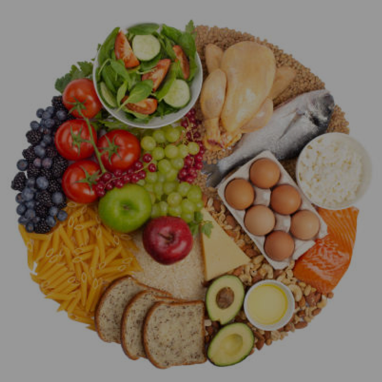

Pentingnya Pola Hidup Sehat
Di masa pandemi sekarang, kita perlu kita perlu menjaga kesehatan kita. Termasuk pola makan, karena apapun yang kita makan akan berdampak terhadap kesehatan. Berikut adalah tips untuk memilih makanan yang sehat dan layak di konsumsi

Kebersihan & Kondisi
Kebersihan Adalah hal yang paling penting. Kemudian dilanjutkan dengan kondisi makanan yang akan kita konsumsi

Porsi & Gizi
Porsi makanan yang kita makan haruslah sesuai dengan kebutuhan dan gizi kita. Agar terpenuhinya segala hal yang di butuhkan oleh tubuh kita
Olahraga
Jika pemilihan makanan, porsi sudah mampu kita laksanakan. Rutinlah berolah raga, agar tubuh kita menjadi fit dan niscaya terhidar dari penyakit.